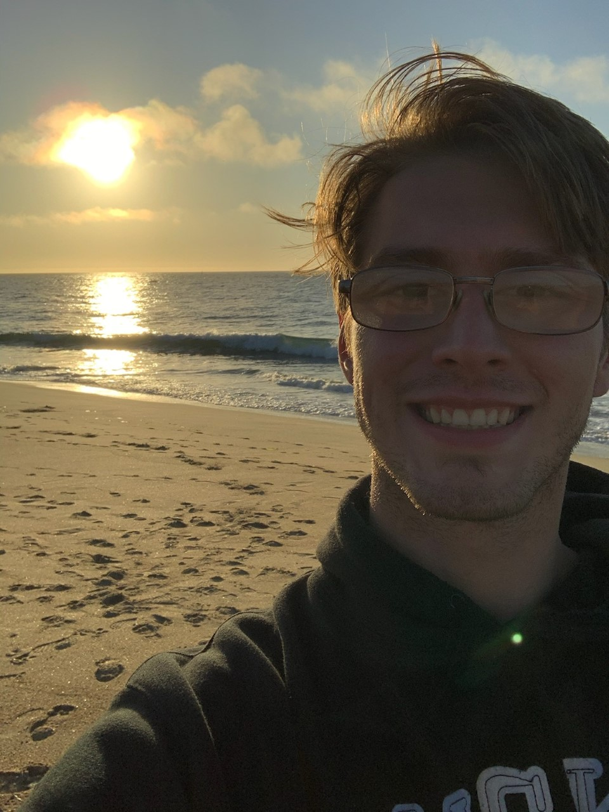

About Me
Hello!
My name is Tyler Brian Yeager. I am a former park ranger currently living in the Bay Area and enrolled in a Full-Stack coding bootcamp through UC Berkeley Extension.
Allow me to share a bit of my background. I attended the University of Central Arkansas from 2012 to 2016 where I obtained a Bachelor of Science degree in Anthropology. Originally I had planned on becoming a famous archaeologist and discovering something that rivaled Carter's discovery of Tutankhamun's tomb. Well life had different plans and I found myself working a summer season for Arkansas State Parks. I realized that I enjoyed outdoor recreation and decided to pursue that as a career. Since then I have worked at locations such as Southeast Utah at Bear's Ears National Monument, North-central Colorado, and Northeast Utah where I was fortunate enough to experience new locations, new challenges, new people, and different backgrounds. This career taught me much about being a naturalist, using critical thinking to solve problems in fast-paced environments, and how to deal with public relations. While I enjoyed the work, I had realized that it was no longer as challenging and I wanted something more. I relocated to the Bay Area in May 2021 where I found the perfect opportunity to learn a new skill and challenge myself. I look forward to this journey and wish to take it as far as I can.
Projects
I have only been coding for roughly three weeks but I already feel like I am doing things I once considered impossible for me. Here are a few of the projects that I have worked. Personally, I am most proud of the CSS Snippet project as I learned a lot about flexboxes and resolving the final overflow issue with managing 'whitespace' was incredibly satisfying.
Code RefactorContact Me!
Should you ever want to contact me, please click any one of the below links!
Github Linkedin Instagram Facebook Email